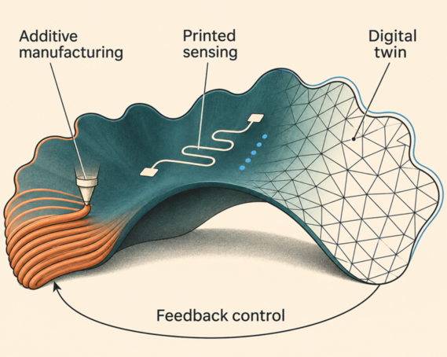
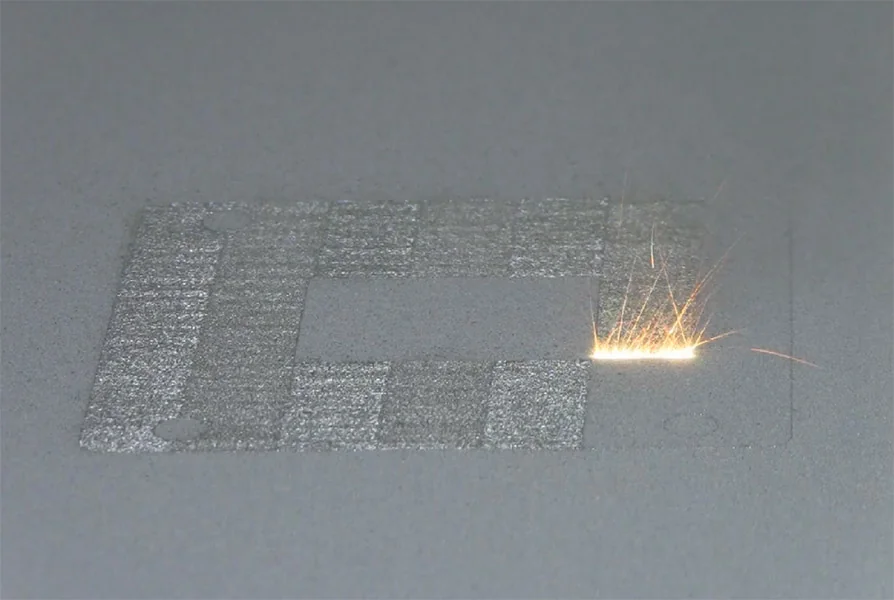
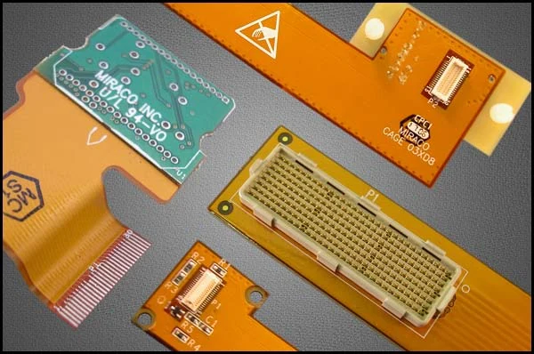
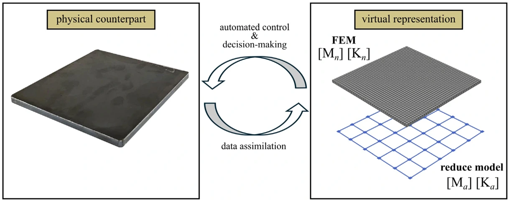
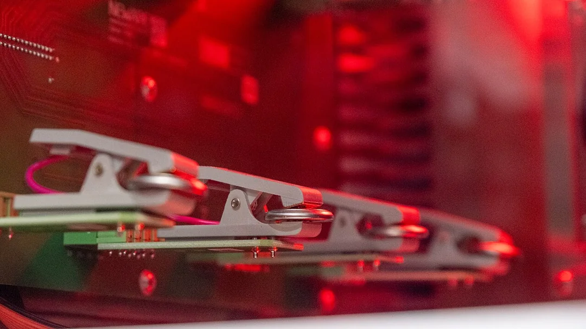
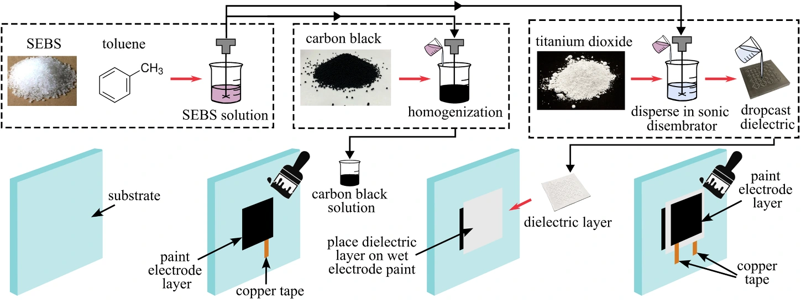
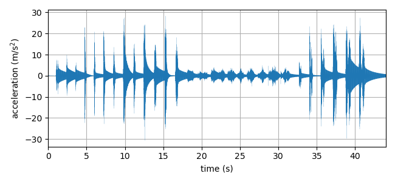
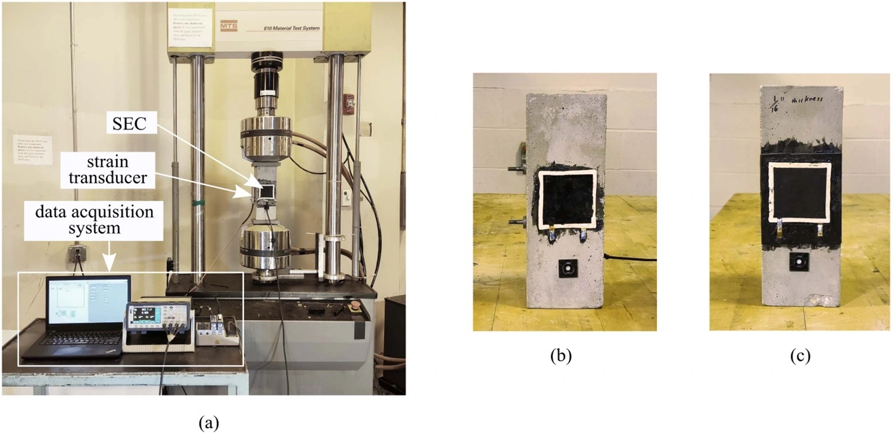

Robotic spot welding at BMW’s Leipzig plant
BMW Werk Leipzig. Resized and converted to WebP. The page crops the image to the viewing area.

BMW Werk Leipzig. Resized and converted to WebP. The page crops the image to the viewing area.

Lane/NIST. Converted to WebP. The layout may crop the displayed photograph.
Source · U.S. government work; public domain in the United States

Billpnh. Photograph extracted from the original one-page PDF, resized for the web, and encoded as WebP.


Dataset by Austin Downey, Jonathan Hong, Jacob Dodson, Michael Carroll, and James Scheppegrell. New spectrogram of the source acceleration signal, sampled at 25.6 kHz, with an 8192-point Hann window, 7168-point overlap, and power spectral density (PSD) in dB relative to the largest PSD in the displayed frequency band. Display spans 0–800 Hz and clips the color scale at −55 dB. Adapted graphic licensed CC BY-SA 4.0.

Falco/NIST. Resized and converted to WebP. The layout may crop the displayed photograph.
Source · U.S. government work; public domain in the United States

Emmanuel A. Ogunniyi, Austin R. J. Downey, Pete Avitabile, Jacob Dodson, and Adriane G. Moura. © 2026 The Authors
O(n) Local Eigenvalue Modification Procedure for real-time updating of structural digital twins with sub-millisecond-latency performance, Mechanical Systems and Signal Processing, 255:114451, 2026.
Complete figure 1 extracted from the published PDF and encoded as WebP. All labels and image panels preserved. Source · CC BY 4.0

Yanzhou Fu and Austin R. J. Downey.
Simulation-in-the-loop additive manufacturing for real-time structural validation, ARTS Laboratory companion repository (2024).
Complete companion-repository drawing, encoded as WebP. All labels and panels preserved. Source · CC BY-SA 4.0

Emmanuel Ogunniyi, Han Liu, Austin R. J. Downey, Simon Laflamme, Jian Li, Caroline Bennett, William Collins, Hongki Jo and Paul Ziehl. © 2024 The Authors
In situ assembly enabling adhesive-free bonding of large area electronic sensors to concrete for structural health monitoring, Smart Materials and Structures, 33(10):105047, 2024.
Complete figure 1 extracted from the published PDF and encoded as WebP. All labels and image panels preserved. Source · CC BY 4.0

Austin Downey, Jonathan Hong, Jacob Dodson, Michael Carroll and James Scheppegrell.
Dataset-2 DROPBEAR Acceleration vs Roller Displacement, cited as ref. 24 in Ogunniyi et al. (2023),
The complete, originally plotted waveform is encoded as lossless WebP. Source · CC BY-SA 4.0

Emmanuel Ogunniyi, Alexander Vareen, Austin R. J. Downey, Simon Laflamme, Jian Li, Caroline Bennett, William Collins, Hongki Jo, Alexander Henderson and Paul Ziehl. © 2023 The Authors
Investigation of electrically isolated capacitive sensing skins on concrete to reduce structure/sensor capacitive coupling, Measurement Science and Technology, 34(5):055113, 2023.
Complete figure 4 extracted from the published PDF and encoded as WebP. All labels and image panels preserved. Source · CC BY 4.0
iMAS Lab supplied the lab logo and Emmanuel A. Ogunniyi’s portrait. San José State University supplied the official university wordmark and primary mark through its brand guide. The marks identify the lab and its affiliation.

.jpg){kind=link}